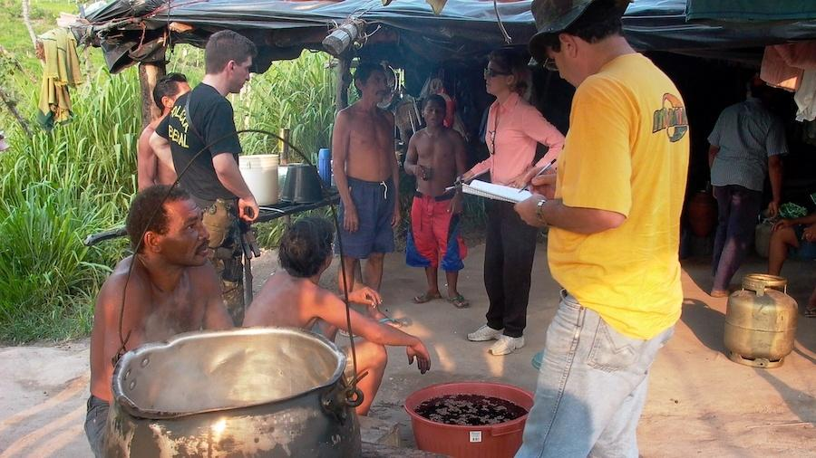

Introdução
Bem-vindo ao site de estatísticas de trabalhos com situações análogas à escravidão. Aqui você descobrirá dados impactantes, histórias de superação e ações em andamento para combater esse problema grave. Junte-se a nós nessa luta pela liberdade e justiça.
Mapa de São Paulo:

Gráficos
Aqui você encontrará estatísticas atualizadas sobre trabalhos com situações análogas à escravidão em São Paulo. Explore os gráficos interativos abaixo para visualizar o número de casos por região, níveis de alfabetização e setores econômicos que mais estão relacionados com o trabalho análogo à escravidão.
Cidades onde possuí o maior número
de vítimas resgatadas do trabalho
análogo a escravidão:
Perfil das pessoas resgatadas
do trabalho análogo a escravidão:
Setores econômicos mais frequentemente
envolvidos nos resgates de trabalho
análogo a escravidão:
Cálculos Estatísticos
Insira os valores separados por vírgula:
Insira os pesos separados por vírgula (para Média Ponderada):
Equações
Aqui você encontrará equações matemáticas que foram utilizadas:
Média Aritmética:
Média Ponderada:
Variância:
Desvio Padrão:
Causas e Impactos
Segundo o Código Penal Brasileiro, são elementos que caracterizam a escravidão moderna: condições degradantes de trabalho, submissão de pessoas ao trabalho forçado ou jornadas exaustivas, restrição da liberdade, vigilância ostensiva ou apoderamento de documentos ou objetos pessoais do trabalhador com finalidade de retê-lo no local de trabalho. As pessoas que trabalham nessas condições acabam sendo pessoas reféns desse sistema de trabalho, pois acabam não tendo condições de ter uma situação de trabalho mais digna, fazendo com que elas fiquem sujeitas a essas condições de trabalho que exploram o máximo do que ser humano que é obrigado a aceitar esse trabalho em busca de talvez uma vida digna
Notícias:
Imigrantes se tornam vítimas do trabalho escravo no Brasil:
Prevenção e Combate
A educação é a principal política de prevenção ao trabalho escravo. Em primeiro lugar, é fundamental que haja a educação e a conscientização do trabalhador sobre o problema. Entender as causas desse processo e quais são seus direitos e deveres. Em segundo lugar, vem a educação profissionalizante para capacitar tecnicamente as pessoas para que elas não fiquem dependentes de um trabalho que explore a sua mão-de-obra bruta. Quanto mais qualificada é aquela pessoa, menos ela será submetida a essas condições. Essas duas medidas são fundamentais e deveriam ser a base do combate ao trabalho análogo à escravidão.
Conclusão
O combate ao trabalho com situações análogas à escravidão é uma responsabilidade de todos nós. Ao nos informarmos, compartilharmos histórias e nos engajarmos em ações concretas, podemos fazer a diferença. Juntos, podemos construir um mundo onde todos sejam livres e tenham seus direitos respeitados.